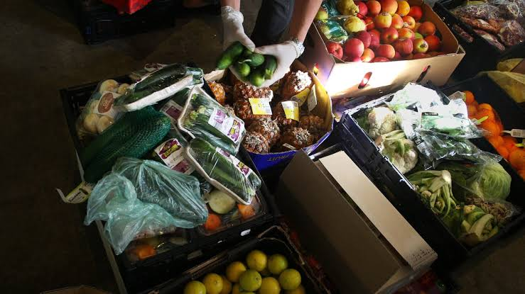
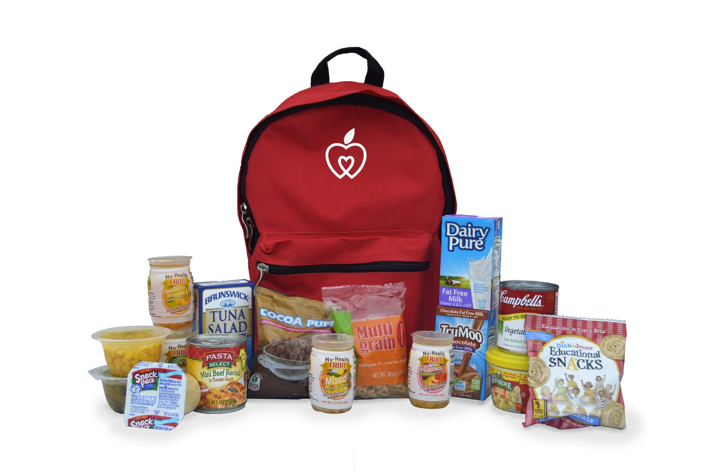
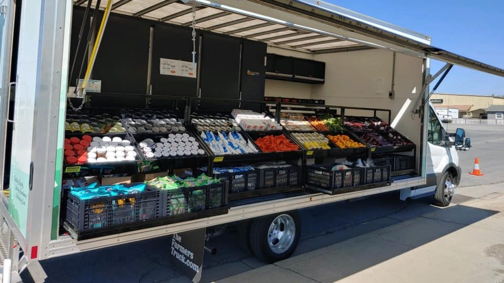

Resgate de Alimentos Saudáveis 🥬
Alimento na mesa, desperdício zero.
Sabia que toneladas de comida boa vão para o lixo todos os dias
enquanto famílias passam fome? Nós fazemos a ponte entre o campo e a
mesa. Coletamos frutas, legumes e verduras excedentes de produtores
e supermercados parceiros que perderiam o valor comercial, mas ainda
estão perfeitos para o consumo. Com isso, combatemos o desperdício,
protegemos o meio ambiente e garantimos comida fresca e nutritiva
para quem mais precisa.

Mochila Cheia 🎒
Nutrição que não tira férias no fim de semana.
Para muitas crianças em situação de vulnerabilidade, a merenda
escolar é a única refeição garantida do dia. Mas o que acontece no
sábado e no domingo? O projeto Mochila Cheia resolve esse problema
entregando kits de alimentos práticos e nutritivos todas as
sextas-feiras. Assim, garantimos que os pequenos continuem
alimentados, saudáveis e prontos para aprender quando a
segunda-feira chegar.

Expresso Comunitário 🚛
Levando comida de verdade aonde ninguém chega.
A fome muitas vezes se esconde no isolamento. O Expresso Comunitário
é a nossa despensa móvel que viaja até periferias, comunidades
isoladas e abrigos de idosos que não têm acesso fácil a mercados ou
transporte. Mais do que entregar cestas, nós montamos uma feira
itinerante gratuita, levando dignidade, acolhimento e segurança
alimentar diretamente na porta de quem mais precisa.
